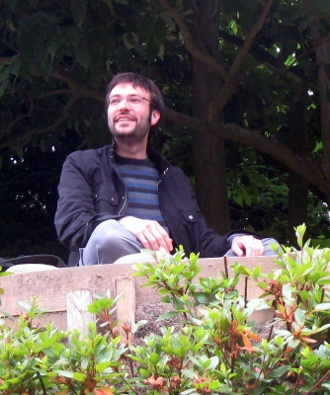

|
 |
|
Je suis maître de conférence (HDR), responsable de l'équipe ALMOST du laboratoire DAVID à l'Université de Versailles Saint-Quentin. Je suis actuellement en délégation mi-temps au LIGM, université Gustave Eiffel.
Présentation de l'équipe ALMOST.
J'ai également été :
- En délégation dans l'équipe RO du LIP6.
- ATER dans l'équipe ALGO du LRI à l'université Paris-Sud.
- Post-doc dans le theory group de l'université de Toronto.
- En thèse dans l'équipe de Logique Mathématique de Paris 7, sous la direction d'Arnaud Durand.
Sujets de recherche
- Complexité, en particulier d'énumération.
- Théorie algorithmique des jeux: simple stochastic games.
- Algorithmique et théorie des graphes pour la chéminformatique, les réseaux, la logistique...
- Polynômes creux ou donnés par des circuits, leurs monômes, racines, degré, factorisation...
Encadrement
Thèses
- Chloé Godet : Cycles dans les graphes et similarités moléculaires.
- Noé Demange : Génération de chemins pour la synthèse de cages moléculaires.
- Jules Andretti : Machine learning et métaoptimisation, une approche hybride pour la recherche opérationnelle en logistique.
- Werner Mérian : Complexité descriptive des problèmes d’énumération.
- Farid Najar : apprentissage et optimisation pour la logistique.
- Xavier Badin de Montjoye : algorithmes d'amélioration de stratégie pour les SSGs. Thèse soutenue en 2022.
- Maël Guiraud : optimisation de la latence dans les réseaux fronthaul. Thèse CIFRE avec Nokia Bell Labs soutenue en 2021.
Stages
- Noé Demange (M2): Construction de cages moléculaires par génération exhaustive de chemins moléculaires.
- Noé Demange et Anne Fernet (M1): Construction de cages moléculaires par génération exhaustive de chemins moléculaires.
- Adame Abdelaziz (M1): Étude empirique des SSGs décomposables.
- Tristan Klein (L3): Recherche de point fixe par dichotomie en dimension fixée pour les SSGs.
- Joël Charles-Rebuffe (L3): Ordonnancement de tâches périodiques.
- Adame Abdelaziz et Clémence Dumoulin (L3): mechanism design pour un marché de logistique.
- Priscille Daoulas (M2): génération de cages moléculaires.
- Xavier Badin (M2): amélioration de Hoffman Karp déterministe et aléatoire.
- Pierre Macherel (M2): nouveaux algorithmes de résolution de SSG.
- Maël Guiraud (M2): méthodes déterministes pour les communications CRAN.
- Karim Gallab (IUT): simulation de réseaux déterministes.
- Ruben Staub (L3): calcul efficace d'isomorphisme de petites cartes planaires (appliqué à la chimie), rapport .
- Yannis Juglaret (Ingé 2A): SSGs presque acycliques version préliminaire du rapport).
Séminaire
Je m'occupe du séminaire de l'équipe ALMOST qui a lieu le jeudi après-midi à 14h dans la salle 301 du bâtiment Descartes. Pour toute information, envoyez-moi un mail.
Me contacter
Laboratoire DAVID
45, avenue des États-Unis
3e étage, bureau 315A
78035 Versailles
E-mail : yann.strozecki "at" uvsq "dot" fr
Tél : +33 (0)1 39 25 43 12
CV en français. |